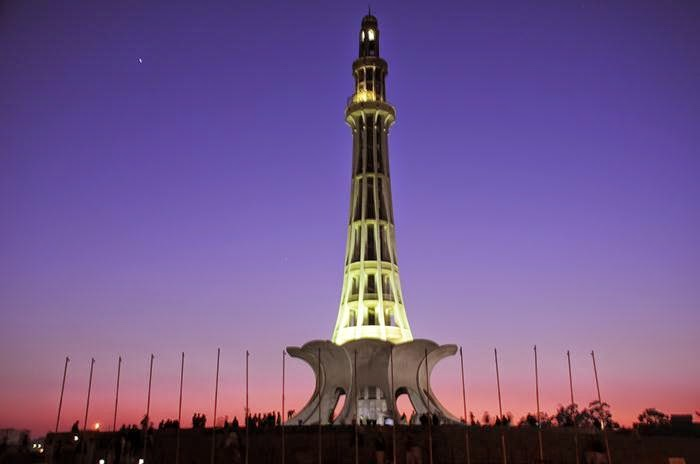
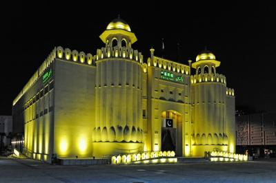
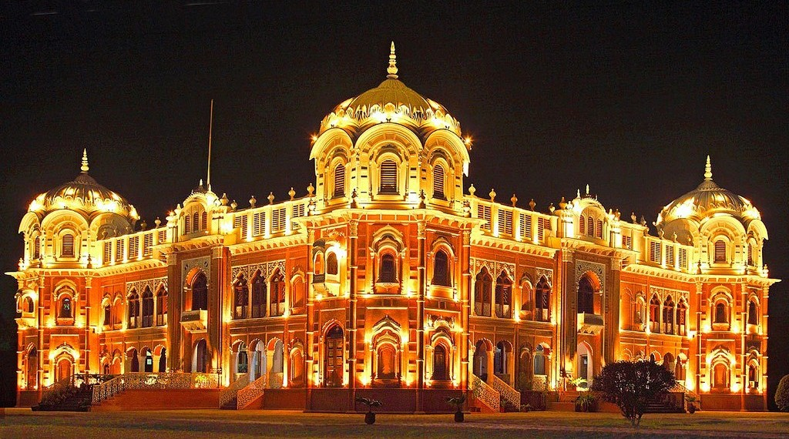
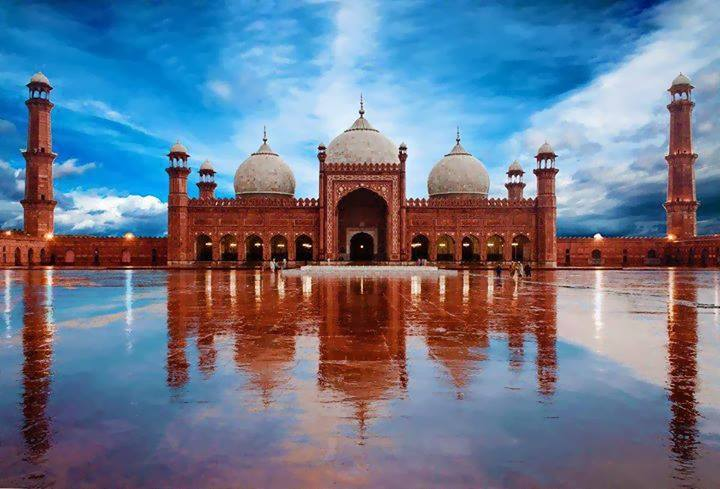

Punjab
Punjab is the most populous of the provinces of Pakistan. Punjab is Pakistan's second largest province by area after Balochistan, and is Pakistan's most populous province with an estimated population of 101,391,000 as of 2015. It is bordered by Sindh, Balochistan and Khyber Pakhtunkhwa, as well as the regions of Islamabad Capital Territory and the Azad Kashmir. It also shares borders with the Indian states of Punjab, Rajasthan, and Jammu and Kashmir. The provincial capital of Punjab is the city Lahore, a cultural centre of Pakistan where the country's cinema industry, and much of its fashion industry, are based.
Punjab has been inhabited since ancient times. The Indus Valley Civilization, dating to 2600 BCE, was first discovered at Harappa. Punjab features heavily in the Hindu epic poem, the Mahabharata, and is home to Taxila - site of what is considered by many to be the oldest university in the world. In 326 BCE, Alexander the Great defeated King Porus at the Battle of the Hydaspes near Mong, Punjab. The Umayyad empire conquered Punjab in the 8th century CE. Punjab was later invaded by Tamerlane, Babur, and Nader Shah. Punjab reached the height of its splendour during the reign of the Mughal Empire, which for a time ruled from Lahore. Following a successful rebellion, Sikh-led armies claimed Lahore in 1759. The administration of the Sikh Empire was based out of Lahore, until its defeat by the British. Punjab was central to the independence movements of both India and Pakistan, with Lahore being site of both the Declaration of Indian Independence, and the resolution calling for the establishment of Pakistan. The province was formed when the Punjab province of British India was divided along religious boundaries in 1947 by the Radcliffe Line after Partition.
Punjab is Pakistan's most industrialised province with the industrial sector making up 24% of the province's gross domestic product. Punjab is known in Pakistan for its relative prosperity, and has the lowest rate of poverty amongst all Pakistani provinces. A clear divide is present between the northern and southern portions of the province; with poverty rates in prosperous northern Punjab amongst the lowest in Pakistan, while some in south Punjab are amongst the most impoverished. Punjab is also one of South Asia's most urbanized regions with approximately 40% of people living in urban areas. Its human development index rankings are high relative to the rest of Pakistan.
Punjab is known in Pakistan for its relatively liberal social attitudes. The province has been strongly influenced by Sufism, with numerous Sufi shrines spread across Punjab which attract millions of devotees annually. The founder of the Sikh faith, Guru Nanak, was born in the Punjab town of Nankana Sahib near Lahore. Punjab is also the site of the Katasraj Temple, which features prominently in Hindu mythology. Several UNESCO world heritage sites are located in Punjab, including the Shalimar Gardens, the Lahore Fort, the archeological excavations at Taxila, and the Rohtas Fort.